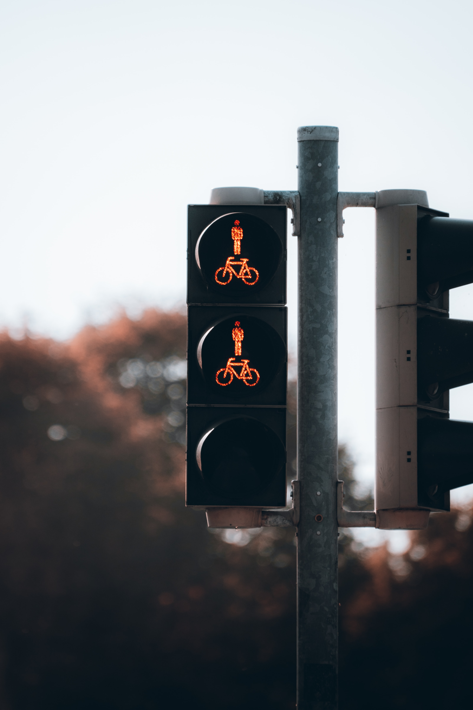

첫 번째 시도
성공하는 삶이란
무엇일까
행복한 삶이란
안녕하세요 저는 지금
카페
알바
면접
보러 갈 사람입니다
쉬운 것이 가장 중요한 것이다
김건마의 웹사이트?
오신걸 환영합니다
1
2
4
3
advancedwebranking.com 이 사이트를 기억하라
줄바꿈을 하는 태그를 찾자
안녕하세여
저는
김건태입니다
이 태그는뭐지?
p태그와 br태그를 사용하는 상황이 다르고 어떨 때 사용하는 
속성이라고 부르는 부분은 순서가 바뀌어도 상관이 없다.